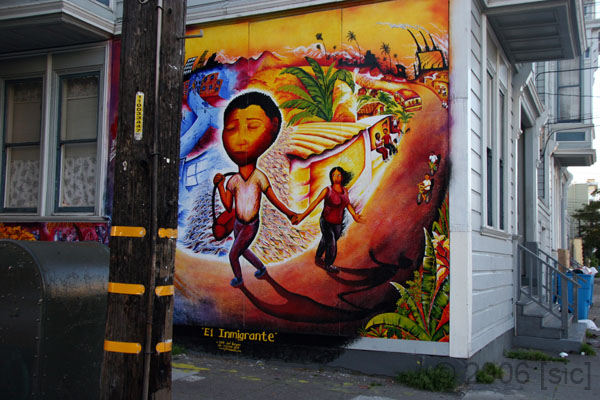
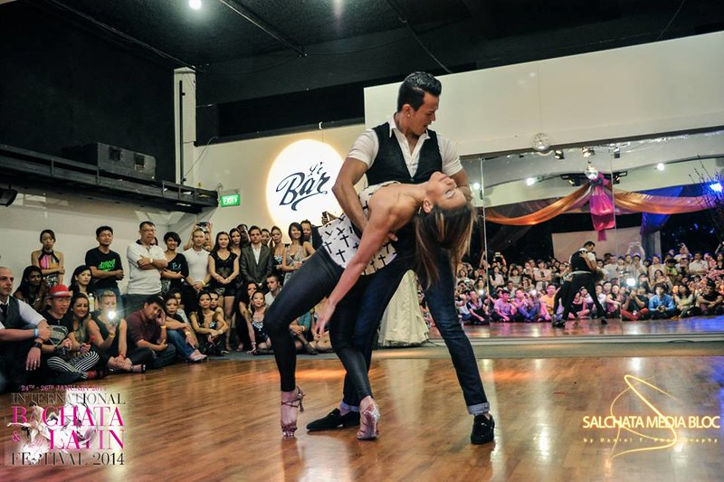

In the U.S Media, Immigrants' Stories Are Told by White People
This blog post discusses the ways this nation can create a more accurate and understanding representation in the media when speaking of immigrants.
Grammy's or Scammy's
In today's episode we share our opinions and talk about how the biggest award show of the year, The Grammys, had its LEAST watched ratings EVER.

Video Project
Future video project description.
CHICKEN SANDWICH
We've packed a lot into this one - shredded cabbage, carmalized onions, deep-fried chicken, chipotle mayo, half-sour pickles, and a toasted sesame bun will leave you thoroughly satisfied!

SWEET CHURROS
Making this classic summer treat at home will remind you of a childhood spent in the park.